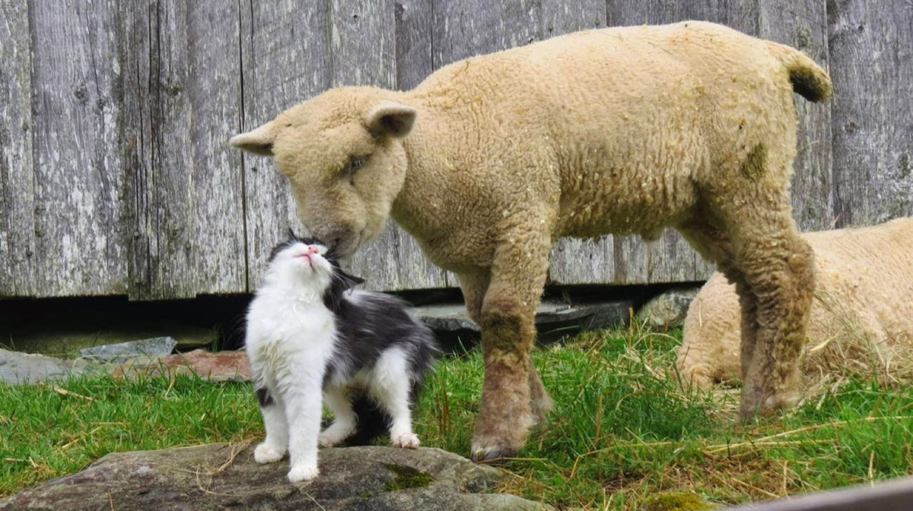

La stănă
Ce vremuri, dară! Amu întorci oile cu telefonul mobil pus
în coarnele berbecului, iar „aipădul”, că așa pare că să zâce, cu
care aleg oile albe de cele negre, îl poartă măgarul în desagi, că
are șâ el năvoie, atunci când să rătăcește. Nu mai zâc că o dat
păstă noi democrația astă, cu drepturile omului și ale
animalelor, că dacă te pune păcatul să bați o capră păstă
coadă, că mai mult behăie decât o doare, te ciamă haia de la
C.N.A. sau D.N.A., tăt un drac, amendându-te, ca nu cumva să
ce dai șâ la capra vecinului.
No, dară să merem la oile noasce, că eu chiar mi-s Văsălie a’
lui Văsălie Ciobanu, hăl din capu’ satului șâ am târla taman pă
pântecul celălalt de deal, unde abia pot să pătrundă câte o
țârucă din antenele TV de la București. Acolo la regățăni, cu
tot BOBUL nost’ fost primul din miniștri pă care dacă îl făcea
mamă-sa mai mare, poate rămânea la guvernare. Amu sănțălăje că nici prea mare nu-i fain să fi, că să vede ce faci, ni-te
ce-o pățât Năstasă?... I-or numărat din ouă șâ le-o găsât lipsă,
nu ale lui, ci ale socrului lui Ponta. Cel puțân hăsta e liber, dar
Năstasă suferă prin infiermeriile penitenciarelor din cauza
ouălor, dar mai cu seamă a tablourilor, că le-a atârnat în
proprietatea lui șâ hăi cu legea, l-or executat silit. Termenii ce
vi-i zâc i-am luat dân TV, dacă nu-s bune, înseamnă că
antenele sunt rele!
La stână e la stână, cum vă zâsei. Sară de sară, după ce trec
oile pân’ strungă, muierea mi le bagă și eu le trag de țâțe până
se mulg de tăt șâ când ajung la ultima oaie, trebă să am grijă să
închid măgarul, că acesta, cum nu-i place ceva la TV, pleacă ca
măgaru-n ceață, ș-api trebe să-l declar c-o fo morit la hăi de la
primărie, să nu mi-l mai impozeze. Dar cel mai important, să
nu-mi plece cu aipădul, că oile ca oile, ele se amestecă șâ pă
urmă nu mai știu să le aleg decât cu sărăcia aia de sculă.
Într-o sară, n-o mai fo’ cazul nici să mulg oile, nici să-nchid
măgarul, fiindcă apăruse o problemă de interes „național” la
TV. Am stat cu tății să-i mărim „ritingul”lui domnu’ Capatos
sau Păcătosu’, știe beceșugul cum îl mai ciamă?!
Când or văzut oile pă Oana Zaiovâta, sau Zăvoranu, cu
mumă-sa pe aceiași laiță, trăsni-m-ar de vă mințesc, or început
să behăie cum fac hăia de la fotbal când nu se acordă
unsprezece metri, iar măgarul a început să dea ora exactă, cu
tăce că ceasul era pe la jumătate la unu, în crucea nopții. Iar
Capatos, așe s-o spăriet de cele două Zăvorance, dar și de
protestul oilor mele, că ne-o băgat în pauză ș-o mărs să-și ia
banii, păntru că s-or găsât niște proști ca noi să le mărească
„ritingul” pă o emisiune dă două parale!
Oana pă o poartă, pă cealaltă Pepe, care cred că nici acu
n-are bani să-și tundă moațele, în schimb stătea într-o
mansardă goală de tăti celi, dar mai ales goală de „Zăvorâta”.
Problema îi că în momentul în cari celi două, Oana șâ
mumă-sa, or început să-și dea flori, oile s-or țâpat cătră
televizor să le mănânce, văzând că nici una dintre ele nu să
bucură dă atâta verdeață. Beceșugul mare o fo’ cu câinii, cari
or început să latre ca la lup, sâmțând că celi două, numai’ ce
veniseră, să vor lua la scărmănat părul de pă cap.
Zâc: no drace, amu adună-te șâ împacă-le, că șâ așe la noi,
tătă lumea să ciartă cu tătă lumea șâ o laudă pă Elena Udrea,
care e ca oaia mea țurcană, toți berbecii umblă după ea s-o
ajute să facă miei!
No, amu am închis TV-ul, că mă zbiară o capră ce dă se fete
într-o noapte atât de importantă pentru țara noastră, ca și
când, dacă vă aduceți aminte, o fo’ atunci când o fo’ născut pe
plan mondial Monica ex-Columbeanu. Atunci, până șâ
măgarul o belit ochii pă ecran, uitând să mai dea ora
Bucureștiului, care o fo’ intrat în istoria omenirii române. O fo’
ceva, dragii mei, ca atunci când s-or zburat americanii pă lună!
Cât privește aici, la stână, n-am liniște. Tăti oile, măgarul și
cânii, mă somează să las televizorul deschis, pentru că mai au
o telenovelă specială cu Monica șâ Pink „Columbeanu”, că tăt
un columbeanu e șâ chinezul ăista. Numai că chinezul face la
el în sat orez, șâ eventual, un chinez păntru România, pe când
Irinel face în București politică de popândău. Cum scoate
capul din găoace, cum toți vor să-l prindă – vezi „Piața
Universității”. Că și așe, la capitală, tăți au fost și sunt niște
popândăi. Își fac avere la „bârlog” și afară fac circ. Dumnezeu
să-i îmburde-n rai cu dibolii!
Eu v-am pupat pă portmoneu, că-mi trăbă șâ mie bani la
stână, că brânza noastră nu e bună. La UE este declarată că nu
este maturată!
Vasile Groza